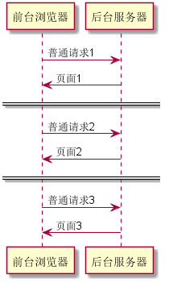
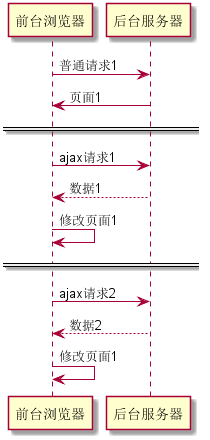

1. 基本概念
传统 Web 应用的缺点：
- 独占式的请求
- 频繁的页面刷新
当下的前端开发通常都会借助 Ajax 技术，Ajax 并没有太多新的内容，但 Ajax 丰富了前端开发的功能。
Ajax 技术的核心概念就是两个： 异步 和 局部刷新。
AJAX 的全称是 Asynchronous JavaScript XML（异步 JavaScript 和 XML），从 AJAX 的组合名称可以看出 AJAX 其实并不是一种技术，而是多种技术的组合，每种技术都有其独特之处，合在一起就成了功能强大的技术。AJAX 的出现揭开了无刷新页面的新时代。
利用 AJAX 技术， Web 前端只需要在后台与服务器进行少量数据交换。
AJAX 采用了异步交互的方式，从而改变了同步交互过程中的“请求 - 等待 - 请求 - 等待”的模式。
异步，是指基于 Ajax 的应用与服务器通信的方式。对于
- 传统的 Web 应用，每次用户发送请求，向服务器请求获得新数据时，浏览器都会完全丢弃当前页面，而等待重新加载新的页面。而在服务器完全响应之前，用户浏览器将一片空白，用户的动作必须中断。而
- 异步是指用户发送请求后，无须等待，请求在后台发送，不会阻塞用户当前活动。用户无须等待第一次请求得到完全响应，即可发送第二次请求。
简单来说，AJAX 的工作原理是通过 xmlHttpRequest 对象来向服务器发出异步请求。xmlHttprequest 可以同步或异步返回 Web 服务器的响应，并且能以文本或一个 DOM 文档形式返回内容。
普通的 Web 项目的工作流程是：

- 发起 <请求-1>
- 获得 <页面-1>
- 发起 <请求-2>
- 获得 <页面-2>
- 发起 <请求-3>
- 获得 <页面-3>
- ...
Ajax 的 Web 项目的流程是：

- 发起 <请求-1>
- 获得 <页面-1>
- 发起 <请求-2>
- 获得 数据，修改 <页面-1>
- 发起 <请求-3>
- 获得 数据，修改 <页面-1>
- ...
Ajax 的核心是 XMLHttpRequest 对象（首次出现于 IE5，如今已被 HTML5 制定为正式规范。）。XMLHttpRequest 提供了异步通信的能力，通过它浏览器可以向服务器发送异步的请求，也可通过它读取服务器响应。
JavaScript 主要完成 Ajax 如下事情：
- 创建 XMLHttpRequest 对象。
- 通过 XMLHttpRequest 对象向服务器发送请求。
- 创建回调函数，监视服务器响应状态，在服务器响应完成后，回调函数启动。
- 回调函数通过 DOM 动态更新HTML页面。
1.1. 使用 jQuery 实现 AJAX
在 JavaScript 中直接使用 XMLHttpRequest 类实现 Ajax 技术仍显得十分繁琐，而 jQuery 吸引人的原因之一就是它提供了大量关于 Ajax 的工具方法。
由于各种浏览器对 xmlHttpRequest 对象的实现有些不同，所以要通过 JavaScript 来实现原生的 AJAX 功能需要编写大量的平台相关的判断处理代码来处理同一份代码的跨平台问题。这大大降低了开发效率和出错概率。而现今通用的解决方案是使用 jQuery 库来实现 AJAX 功能。jQuery 库封装了各个平台的 AJAX 功能，对外提供了统一的接口。
1.1.1. Ajax 请求的请求参数
从本质上看，从前台传往后台的请求参数必须是 key=val 字符串形式。无论是普通请求，还是 ajax 请求；无论是 get 请求（出现在 url 中），还是 post 请求（包含在请求体中），都是如此。
name=tom&age=20&email=123456@qq.com
当通过 jquery 的 ajax 方法向后台发出 ajax 请求，并需要传递参数时，最简单粗暴且行之有效的办法是：在 JS 中去拼接出请求参数字符串。
不过在 JS 中，声明/拼出一个对象远比拼出一个字符串容易的多，为此，jQuery 提供了一个 $.param() 方法来实现这个转换：它能将一个 JavaScript 对象转换为查询字符串。而后，我们可以将其作为 data 属性的值：
var param = {};
param.name = 'tom';
param.age = 20;
param.email = '123456@qq.com';
var str = $.param(param);
console.info(str); // "username=tom&age=20"
jQuery 在 $.param() 方法的基础上，更进一步的进行了简化（方便我们偷懒）：我们可以直接将一个 JS 对象，作为 data 的属性值，jQuery 的 ajax() 方法内部自己会去调用 $.param() 方法将其转换成请求参数字符串。
另外，jQuery 还提供了一种情况下的简化/偷懒的办法： serialize() 方法可以将 jQuery 选中的表单元素，或多个表单控件中的值直接转换成请求参数字符串：
var str = $('#form_id').serialize()
console.info(str); // "username=tom&password=123"
这样就免去了我们从页面上逐个获取表单元素的繁琐操作。
1.1.2. 核心方法：$.ajax()
$.ajax() 方法是 jQuery 最底层的 AJAX 实现，也就是说 jQuery 的其他 AJAX 方法（例如：$.get() 和 $.post()）都是基于此方法实现的。使用的语法如下：
$.ajax(options)
该方法只有一个参数，但这个参数包含了 $.ajax() 方法所需要的请求设置以及回调函数等信息，参数以 key-value 的形式存在，所有参数都是 可选的 。
$.ajax() 参数很多，其中最常见的有：
| 参数名称 | 参数类型 | 参数说明 |
|---|---|---|
| url | string | 默认值当前页地址，发送请求的地址 |
| type | string | 默认'get'，表示请求方式。除了 'post' 外，还支持 'put' 和 'delete'（依赖于浏览器） |
| contentType | string | 默认值为 application/x-www-form-urlencode。这个属性表示发送给服务器的内容的编码类型。默认值适用大多数情况。 |
| data | string 或 对象 | 发送到服务器的请求参数。通常是 Object，jQuery 会将它自动转换成请求字符串格式（?aaa=bbb&ccc=ddd 形式）。 |
| dataType | String | 预期服务器返回的数据类型。如果不指定，jQuery 会根据 HTTP 中的 MIME 信息进行推测。常见有：xml、html、json、Text |
| success | function | 请求成功后调用此函数。参数是由服务器返回的数据（具体数据类型与 dataType 有关）；描述状态的字符串 |
| async | boolean | 默认 true，表示异步请求。 设置为 false 则表示使用同步方式发起请求。 |
例如：
$.ajax({
url: context_path + '/api/employee',
type: "post",
data: $.param(obj), // $('#form').serialize(), // "key1=val1&key2=val2&key3=val3"
dataType: 'json',
success: function(result) {
if (result.code == 200) {
...
}
}
});
除此之外，$.ajax() 方法，还可以设定 beforeSend（提交前回调）、error（请求失败后回调）、success（请求成功返回后回调）以及 complete（请求完成回调，无论成功失败后 ）回调函数。
其他参数：
| 参数名称 | 参数类型 | 参数说明 |
|---|---|---|
| beforeSend(XHR) | function | 发送前回调函数。可以修改 xmlHttpRequest 对象。 如果返回false，则可以取消本次请求。 XMLHttpRequest 对象是该方法唯一参数 |
| context | object | 用于设置 AJAX 回调函数的上下文。也就是说，让回调函数内的 this 指向这个对象。 如果没有设置它，那么回调函数中的 this 指向的是本次 AJAX 请求时传递的 options 参数。 |
| error | function | 失败时调用此函数 有三个参数：XMLHttpRequest对象、错误信息、可选的异常对象 |
| complete(XHR, TS) | function | 请求完成后调用此函数（成功或失败都调用）。参数：：XMLHttpRequest对象 和 一个描述请求类型的字符串 |
| timeout | number | 设置请求超时时间（毫秒） |
1.1.3. $.get() 方法 和 $.post() 方法
$.get() 使用 GET 方法进行异步请求。其语法结构如下：
$.get(url [, data] [, callback] [, type])
| 参数名称 | 参数选择 | 参数类型 | 参数说明 |
|---|---|---|---|
| url | 必选 | String | 请求 HTML 的 URL 地址 |
| data | 可选 | Object | 发送至服务器的数据 |
| callback | 可选 | function | 一个形如：function（data，statusText，jqXHR）{...} 的函数。 |
| type | 可选 | String | 规定预计的服务器响应的数据类型，包括 xml、html、script、json、text 和 _default |
callback 参数是一个形如 function（data，statusText，jqXHR）{...} 函数类型的变量，它的 3 个参数分别是：
- data 是服务器响应
- statusText 是服务器响应类型的描述信息
- jqXHR 表示发送异步请求的 XMLHttpRequest 对象
$.post() 方法与 $.get() 方法的结构和使用方式大体相同。